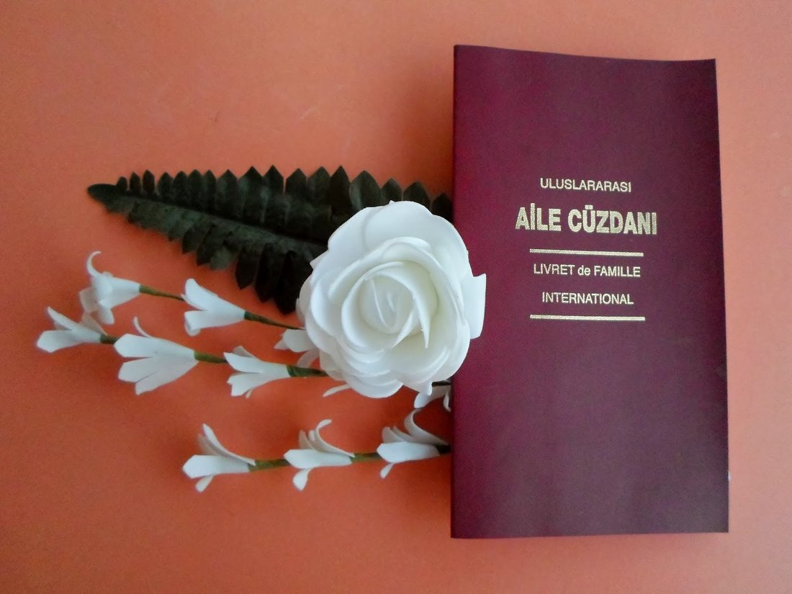

Фатих, Стамбул — с 2014 года

С АПОСТИЛЕМ, ПРИЗНАННЫЙ ВО ВСЁМ МИРЕ, ПОЛНОЕ СОПРОВОЖДЕНИЕ ОТ НАЧАЛА ДО КОНЦА — ВАМ ОСТАЁТСЯ ПЛАНИРОВАТЬ ТОЛЬКО САМУ СВАДЬБУ.
Планируете пожениться в Турции как иностранная пара? Наша VIP-услуга по оформлению брака в ускоренном порядке берёт на себя всё — от первой консультации и подготовки документов до выдачи вашей апостилированной семейной книги (Международного свидетельства о браке), полностью легализованной и признанной во всём мире.
Мы собираем и легализуем ваши документы, координируем работу с соответствующими турецкими органами и следим за тем, чтобы всё — включая запись о браке — было апостилировано и признавалось там, где это нужно вам, как в Турции, так и за рубежом.
Написать в WhatsApp — бесплатная консультацияСообщите нам своё гражданство, и мы пришлём точный список документов — паспорт, справка об отсутствии препятствий к браку, фотографии и другое.
Мы готовим присяжные переводы и берём на себя все нотариальные заверения от вашего имени, в приоритетном порядке 24/7.
Мы координируем подачу заявления и регистрацию брака в турецком муниципалитете от начала до конца.
Ваша семейная книга (Aile Cüzdanı) оформляется, апостилируется и доставляется — признаётся во всех 92 странах Гаагской конвенции.

Aile Cüzdanı выдаётся сразу после регистрации брака и представляет собой официальную международную семейную книгу Турции — красиво оформленный документ с золотым тиснением, служащий главным доказательством вашего брака.
После апостилирования она признаётся во всех 92 странах-участницах Гаагской конвенции — единственная памятная реликвия, которая подтверждает ваш брак, куда бы ни привела вас жизнь.
Только по предварительной записи. Визиты в муниципалитет для регистрации брака и к нотариусу бронируются заранее, чтобы всё прошло без задержек — напишите нам в WhatsApp удобные для вас даты, и мы возьмём на себя составление расписания.
Брак в Турции — понятно, полностью и максимально прозрачно
Спросить в WhatsAppГотовы начать или у вас остался вопрос?
Написать в WhatsApp — бесплатная консультация